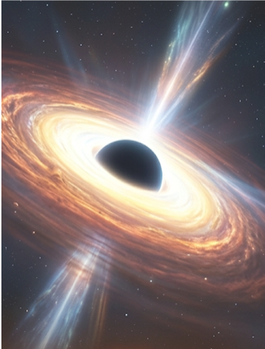
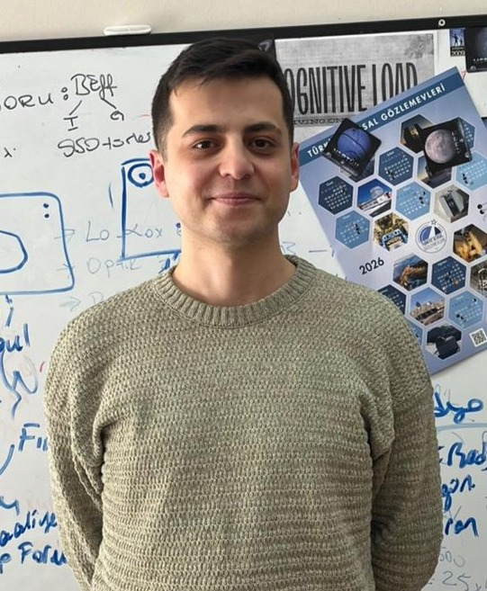
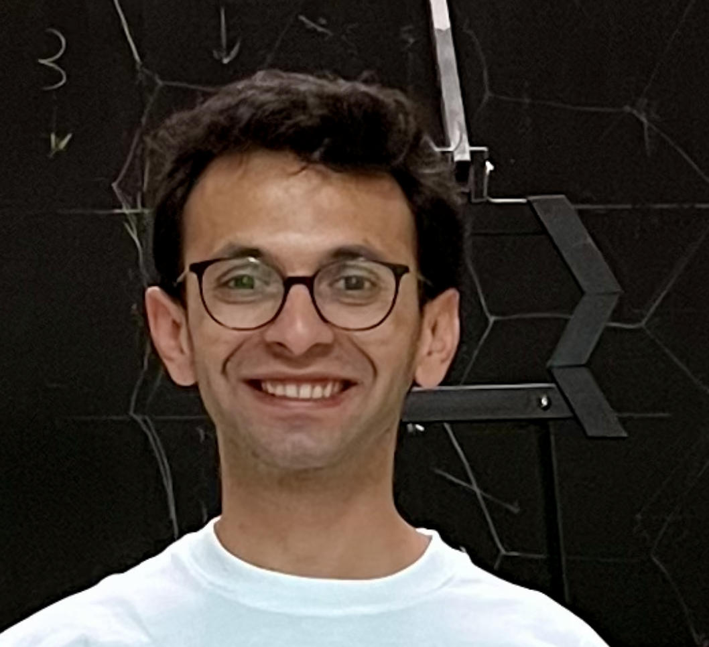

padding-top: 280px;
padding-top: 280px;

Erciyes Üniversitesi AGN Araştırma Grubu olarak aktif galaksi çekirdeklerini, x-ışın, morötesi, optik, kızılötesi ve radyo dalgaboylarında elde edilen gözlemlerle inceliyoruz. Bu gözlemlerden elde edilen verileri analiz ederek, AGN yaspısını, evrimini ve çevreleriyle etkileşimlerini anlamaya çalışıyoruz. Araştırmalarımızda istatistiksel yöntemler, makine öğrenmesi ve bilimsel yazılım geliştirme tekniklerini kullanıyoruz. Araştırmalarımızın temel amacı, süper kütleli kara deliklerin büyüme süreçlerini, galaksi evrimini ve evrendeki enerjik astrofiziksel sistemleri anlamaktır. Veri kaynakaları arasında XMM-Newton, Chandra, NuSTAR, XRISM, SDSS, LAMOST, LoTSS, RACS, MeerKAT verileriyle aktif galaktik çekirdeklerin zamanlama ve spektral yapısını çözümlüyoruz.

AGNverse araştırma grubunun temel amacı, süper kütleli kara deliklerin büyüme süreçlerini, galaksi evrimini ve evrendeki enerjik astrofiziksel sistemleri anlamaktır. Araştırmalarımızda çok dalgaboylu gözlemler, istatistiksel yöntemler ve bilimsel yazılım geliştirme tekniklerini birleştirerek, Aktif Galaktik Çekirdekler ve diğer enerjik astrofiziksel sistemlerin fiziksel süreçlerini araştırıyoruz. Modern astronominin, gözlemler, hesaplamalar ve açık bilim entegrasyonu ile ilerlediğine inanıyoruz.
AGNverse araştırma grubu, aktif galaktik çekirdekler, süper kütleli kara delikler, yüksek enerjili astrofizik ve bilimsel hesaplama alanlarında çalışmalar yürütmektedir.

Araştırma Grubu Lideri
Aktif galaktik çekirdekler, radyo galaksileri ve süper kütleli kara deliklerin evrimi üzerine çalışmalar yürütmektedir.

Araştırmacı / Doktora Öğrencisi
Bilimsel programlama, makine öğrenmesi ve astronomik veri analizi üzerine çalışmaktadır.

Araştırmacı / Doktora Öğrencisi
Yüksek enerjili astrofizik ve gözlemsel astronomi alanlarında araştırmalar yapmaktadır.

Araştırmacı / Doktora Öğrencisi
Yüksek enerjili astrofizik ve gözlemsel astronomi alanlarında araştırmalar yapmaktadır.

Araştırmacı
Yüksek enerjili astrofizik ve gözlemsel astronomi alanlarında araştırmalar yapmaktadır.
Araştırma ekibinin tamamlanmış ve devam eden yayınları, bilimsel projeleri ve tez çalışmaları
Structure, evolution, variability, radio emission, giant radio quasars, and candidate binary supermassive black holes.
Structure, evolution, variability, radio emission, giant radio quasars, and candidate binary supermassive black holes.
Optical, ultraviolet, X-ray, and radio observations for understanding energetic astrophysical systems.
Statistical inference, uncertainty estimation, Bayesian methods, and large astronomical datasets.
Classification, anomaly detection, feature extraction, and intelligent analysis of astronomical observations.
Python, MATLAB, R, reproducible workflows, open-source software, and scientific computing.
Publications in leading international journals with research focused on Active Galactic Nuclei, radio galaxies and supermassive black holes.
Development of scientific software, analysis pipelines, and reproducible research tools for astronomical data.
Mentoring graduate and undergraduate students in astrophysics, machine learning, and scientific programming.
Bilimsel yazılım geliştirme, astrofizik araştırmaların temel bir parçasıdır. Projelerimiz, astronomik verilerin analizini otomatikleştirmek, araştırma süreçlerini hızlandırmak ve bilimsel sonuçların tekrarlanabilirliğini artırmak için tasarlanmıştır. Tayfsal indirgeme ve analiz araçları, makine öğrenmesi uygulamaları ve etkileşimli eğitim kaynakları gibi çeşitli yazılımlar üretiyoruz.
Beyond research, I enjoy teaching astrophysics, machine learning, scientific programming, and astrostatistics. I strongly believe that open knowledge, reproducible research, and collaborative learning are essential for the future of science.
Astrophysics, Cosmology, Machine Learning, Scientific Programming, Astrostatistics, and Data Analysis.
Graduate and undergraduate research, thesis supervision, software development, and scientific mentoring.
Sharing software, educational material, and reproducible workflows for the astronomy community.
I welcome collaborations, student inquiries, and research discussions.
Email
nfilizak@erciyes.edu.tr
Department
Department of Astronomy and Space Sciences
Erciyes University
Kayseri, Türkiye